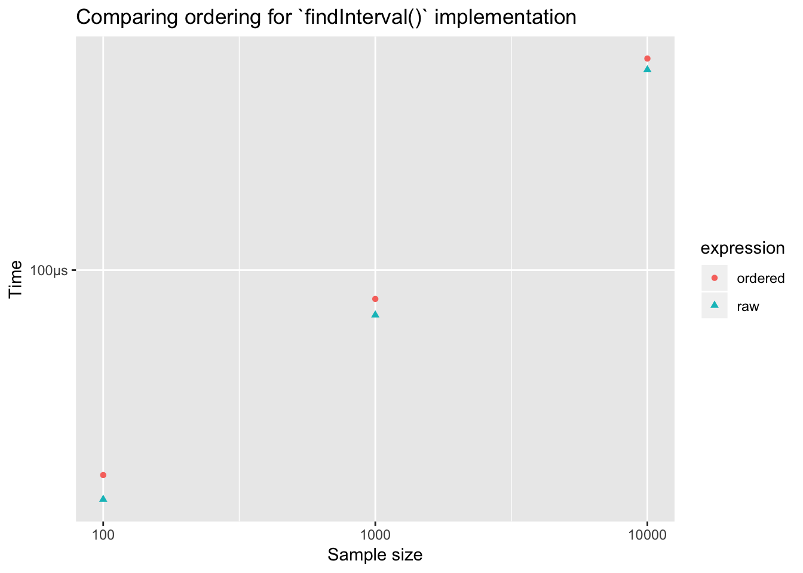
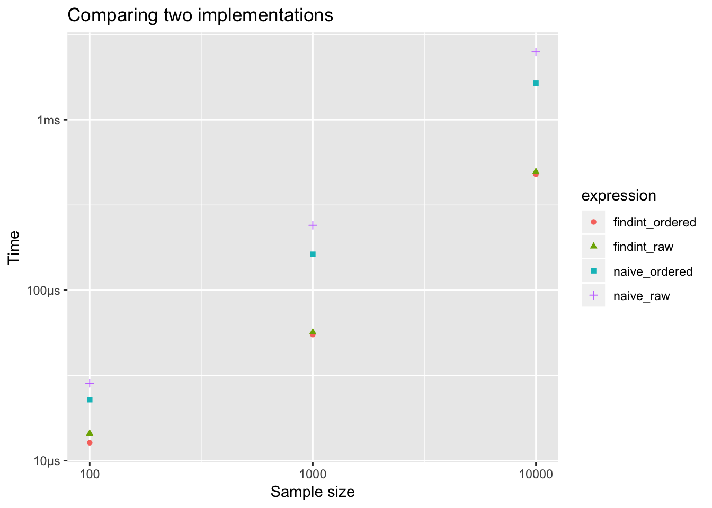
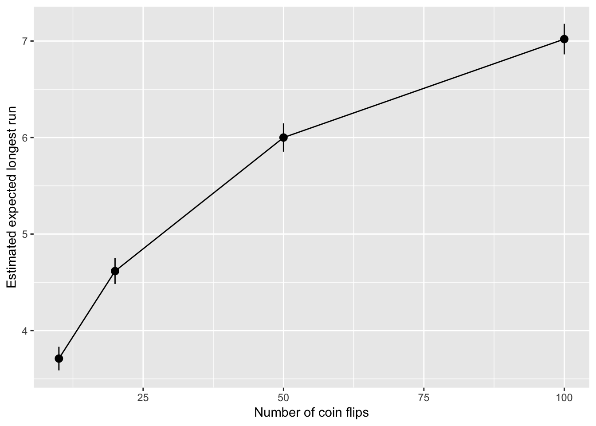
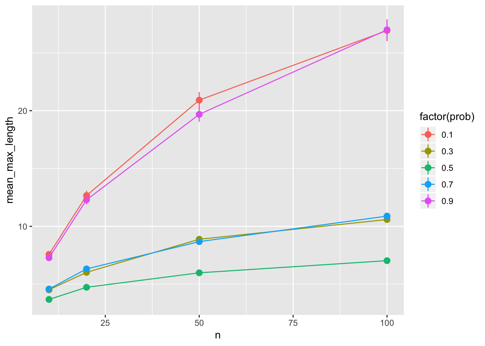
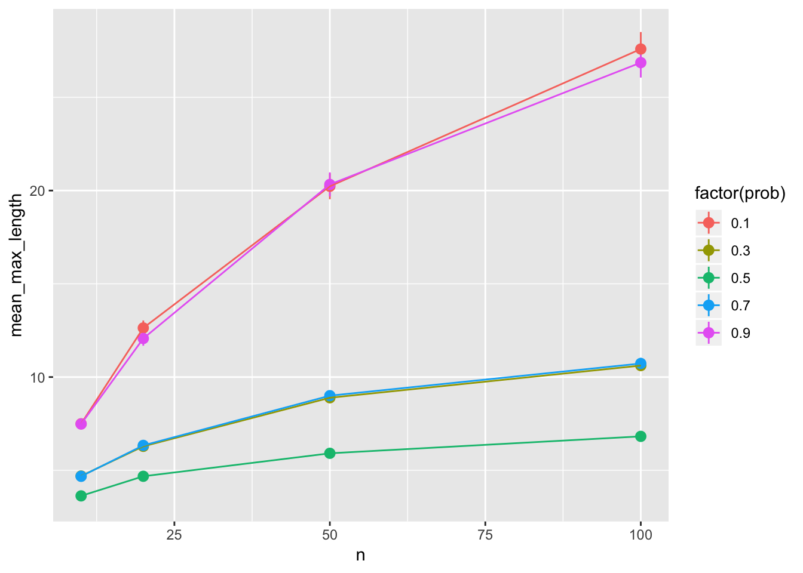

knitr::opts_chunk$set(echo = TRUE, results = "hide")
library(tidyverse)
set.seed(181871)findInterval() and Ross’s statement about efficiency.
Easiest to explore by writing functions:
find_int <- function(n, values, probs){
cumulative_probs <- cumsum(probs)
u <- runif(n)
values[findInterval(u, cumulative_probs) + 1]
}Check with a somewhat extreme example:
values <- c( 1, 2, 3, 4)
probs <- c(0.05, 0.05, 0.10, 0.80)
find_int(n = 1000, values, probs) %>%
table()Ross’s suggestion for efficiency is to order by decreasing probability first, e.g.
ind_order <- order(probs, decreasing = TRUE)
values_ordered <- values[ind_order]
probs_ordered <- probs[ind_order]
find_int(n = 1000, values_ordered, probs_ordered) %>%
table()Now compare timing:
library(bench)
timing_find_int <- press(
n = c(100, 1000, 10000),
mark(
ordered = find_int(n, values_ordered, probs_ordered),
raw = find_int(n, values, probs),
check = FALSE
)
)## Running with:
## n## 1 100## 2 1000## 3 10000timing_find_int %>%
ggplot(aes(x = n, y = mean,
color = expression, shape = expression)) +
geom_point() +
labs(x = "Sample size", y = "Time",
title = "Comparing ordering for `findInterval()` implementation") +
scale_x_log10()
Hardly any difference! Why, findInterval() doesn’t do a sequntial search through the intervals. It does something much more efficient.
Compare to the sequential search:
naive <- function(n, values, probs){
cumulative_probs <- cumsum(probs)
u <- runif(n)
x <- double(n)
for (i in 1:n){
if(u[i] < cumulative_probs[1]){
x[i] <- values[1]
} else if (u[i] < cumulative_probs[2]){
x[i] <- values[2]
} else if (u[i] < cumulative_probs[3]){
x[i] <- values[3]
} else {
x[i] <- values[4]
}
}
x
}timings <- bench::press(
n = c(100, 1000, 10000),
bench::mark(
findint_ordered = find_int(n, values_ordered, probs_ordered),
findint_raw = find_int(n, values, probs),
naive_ordered = naive(n, values_ordered, probs_ordered),
naive_raw = naive(n, values, probs),
check = FALSE
)
)## Running with:
## n## 1 100## 2 1000## 3 10000timings %>%
ggplot(aes(x = n, y = mean,
color = expression, shape = expression)) +
geom_point() +
labs(x = "Sample size", y = "Time",
title = "Comparing two implementations") +
scale_x_log10()
Much bigger difference in a sequential search, but naive sequential search is much slower than findInterval() approach.
This paper focuses on these first accessible skills and perspectives – the “good enough” practices for scientific computing: a minimum set of tools and techniques that we believe every researcher can and should consider adopting.
Wilson G, Bryan J, Cranston K, Kitzes J, Nederbragt L, et al. (2017) Good enough practices in scientific computing. PLOS Computational Biology 13(6): e1005510. https://doi.org/10.1371/journal.pcbi.1005510
All the sections are important! We’ll interpret some sections a little differently given our scope.
We’ll return to the article a few times. The project rubric will include following the practices outlined in this article.
The core realization in these practices is that being readable, reusable, and testable are all side effects of writing modular code, i.e., of building programs out of short, single-purpose functions with clearly-defined inputs and outputs. Much has been written on this topic, and this section focuses on practices that best balance ease of use with benefit for you and collaborators.
Place a brief explanatory comment at the start of every program (2a)
Decompose programs into functions (2b)
What’s the difference between a program and a function?
Rmarkdown often lets us blend the line between program and the documentation of the program. This is good, it encourages us to document as we go.
Sometimes analyses will get complicated enough that a single RMarkdown document isn’t the best way to keep things organized…more on Thursday.
A random sequence of H’s and T’s is generated by tossing a fair coin \(n = 20\) times. What’s the expected length of the longest run of consecutive heads or tails?
Taken from Tijms, Henk. Probability: A Lively Introduction. Cambridge University Press, 2017
How does the expected length of the longest run vary with the number of coinflips, \(n\)?
How does the answer change if the coin isn’t fair?
How does the expected length of the longest run compare to the median length of the longest run?
How does the variance of our estimate vary with the number of simulations we do?
In each case we are adding an additional parameter to our simulation
A useful break-down of our previous process into a few functions:
sim_coin_tosses <- function(n_sims, n, prob){
# Simulates n_sims sequences of n coin tosses
# with heads occuring with probability prob
# fair, by default
rerun(n_sims,
rbinom(n, size = 1, prob = prob))
}
max_run_length <- function(x){
# Finds length of longest run in x
max(rle(x)$lengths)
}
sim_run_lengths <- function(n_sims, n, prob = 0.5){
# Returns length of longest run in n_sims sequences
# of coin toss sequences of n flips, where each flip
# has prob p of being heads.
sim_coin_tosses(n_sims, n, prob) %>%
map_dbl(max_run_length)
}Your turn What should the output be?
sim_run_lengths(n_sims = 5, n = 10, prob = 1)Now, n the number of flips is an argument to our function.
How does the expected length of the longest run vary with the number of coinflips, \(n\)?
Set up some values of \(n\)
ns <- c(10, 20, 50, 100)For each element in ns estimate the mean longest run:
Simulate the longest runs for each \(n\):
lengths_for_each_n <- map(ns,
~ sim_run_lengths(n_sims = 500, n = .x))Find the mean of each set of longest runs:
map_dbl(lengths_for_each_n, ~ mean(.x))If the second argument takes the pattern ~ fun(x), you can just supply fun without using the formula notation:
map_dbl(lengths_for_each_n, ~ mean(.x))
# is the same as
map_dbl(lengths_for_each_n, mean)You can supply addtional arguments to map() which will be passed on to the function in the second argument:
lengths_for_each_n <- map(ns,
~ sim_run_lengths(n_sims = 500, n = .x))
# is the same as
lengths_for_each_n <- map(ns,
sim_run_lengths,
n_sims = 500)Storing more complicated simulations in tibbles/data frames let’s you leverage other data manipulation tools (e.g. ggplot2, dplyr)
Now you know map(), the purrr functions map2(), pmap() provide an easy extension for you to iterate over more than one object.
Our current process:
ns <- c(10, 20, 50, 100)
lengths_for_each_n <- map(ns,
~ sim_run_lengths(n_sims = 500, n = .x))
map_dbl(lengths_for_each_n, ~ mean(.x))But ns, lengths_for_each_n and our results are:
Makes sense to keep them all together and lined up.
Join them up afterwards (OK, but better way soon):
sims <- data_frame(
n = ns,
n_sims = 500,
run_lengths = lengths_for_each_n,
est = map_dbl(lengths_for_each_n, mean)
)
simsEasy manipulation with dplyr:
sims <- sims %>%
mutate(
sd = map_dbl(run_lengths, sd)
)Easy plotting with ggplot:
sims %>%
ggplot(aes(n, est)) +
geom_pointrange(aes(
ymin = est - 1.96*sd/sqrt(n_sims),
ymax = est + 1.96*sd/sqrt(n_sims))) +
geom_line() +
labs(x = "Number of coin flips", y = "Estimated expected longest run")
Everything we need is in one object, easy to save for later:
write_rds(sims, "max-run-length-by-n-simulations.rds")A better approach is to start with a data frame from the outset:
sims <- data_frame(
n = ns
)Also forces you to think about the parameters of the simulation (i.e. what should vary?)
Now our operations happen within the data frame, dplyr::mutate() adds new columns, here one generated by a map() over the ns column:
sims_with_lengths <-
sims %>%
mutate(run_lengths = map(ns, sim_run_lengths,
n_sims = 500))Calls to map_dbl() or map_int() etc, get us columns of numbers:
sims_with_stats <-
sims_with_lengths %>%
mutate(
mean_longest_run = map_dbl(lengths_for_each_n, mean),
sd_longest_run = map_dbl(lengths_for_each_n, sd))
sims_with_statsns
(ps <- seq(0.1, 0.9, by = 0.2))Now what is the expected length of the longest run for every combination of \(n\) and \(p\)?
all_ns <- rep(ns, each = length(ps))
all_ps <- rep(ps, times = length(ns))map2() and pmap()Recall, this translates to “for each element of .x, do .f”:
map(.x, .f)map2() extends this when you need to iterate of two objects, “for each element of .x and .y do .f”
map2(.x, .y, .f)But now .f should take two arguments.
A simpler example
map2(.x = c(1, 2, 3), .y = c(-1, 0, 1),
~ .x * .y)map2(all_ns, all_ps,
~ sim_run_lengths(10, n = .x, prob = .y)) # 10 just as an exampleHard to keep track of which belongs to which…so start with a data frame:
simulation_params <- list(
n = ns, prob = seq(0.1, 0.9, by = 0.2)
)
runs <- cross_df(simulation_params)Use dplyr to add columns:
runs <- runs %>%
mutate(
run_lengths = map2(n, prob,
sim_run_lengths, n_sims = 500)) %>%
mutate(
mean_max_length = map_dbl(run_lengths, mean),
sd_max_length = map_dbl(run_lengths, sd),
n_sims = map_dbl(run_lengths, length)
)Easy to plot and manipulate:
runs %>%
ggplot(aes(x = n, y = mean_max_length, color = factor(prob))) +
geom_pointrange(aes(
ymin = mean_max_length - 1.96*sd_max_length/sqrt(n_sims),
ymax = mean_max_length + 1.96*sd_max_length/sqrt(n_sims))) +
geom_line() 
Switching to a dataframe, maybe use pmap():
simulation_params_big <- list(
n = ns,
prob = seq(0.1, 0.9, by = 0.2),
n_sims = c(100, 1000, 10000)
)
runs_big <- cross_df(simulation_params_big)Use dplyr to add columns:
runs_big <- runs_big %>%
mutate(
run_lengths = pmap(list(n = n, prob = prob, n_sims = n_sims),
sim_run_lengths)) %>%
mutate(
mean_max_length = map_dbl(run_lengths, mean),
sd_max_length = map_dbl(run_lengths, sd)
)Easy to plot and manipulate:
runs_big %>%
ggplot(aes(x = n, y = mean_max_length, color = factor(prob))) +
geom_pointrange(aes(
ymin = mean_max_length - 1.96*sd_max_length/sqrt(n_sims),
ymax = mean_max_length + 1.96*sd_max_length/sqrt(n_sims))) +
geom_line() +
facet_wrap(~ n_sims)